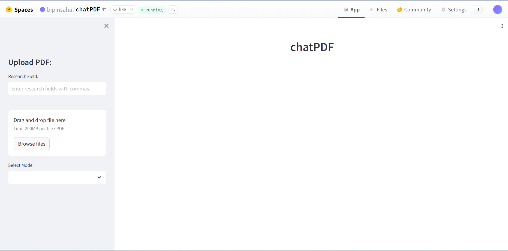
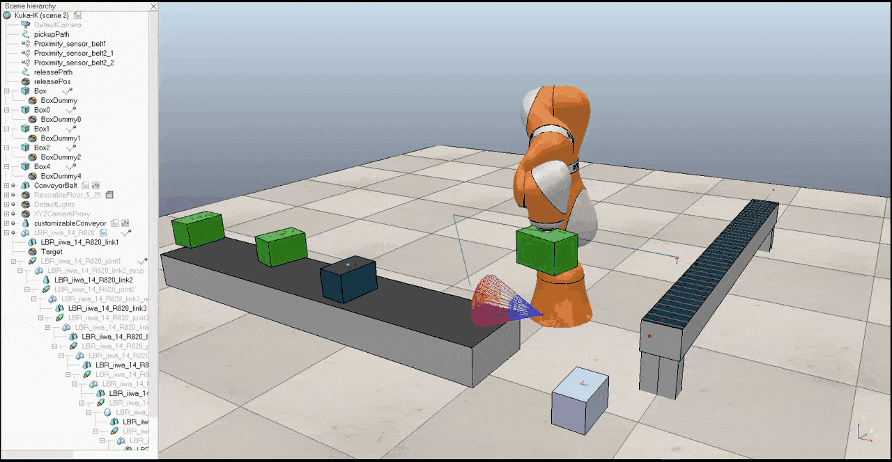
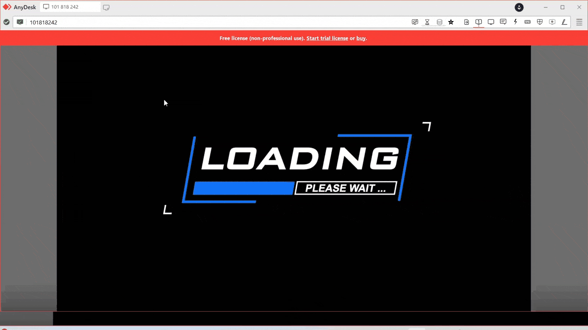
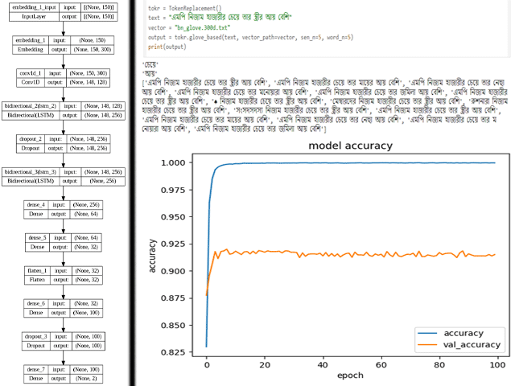
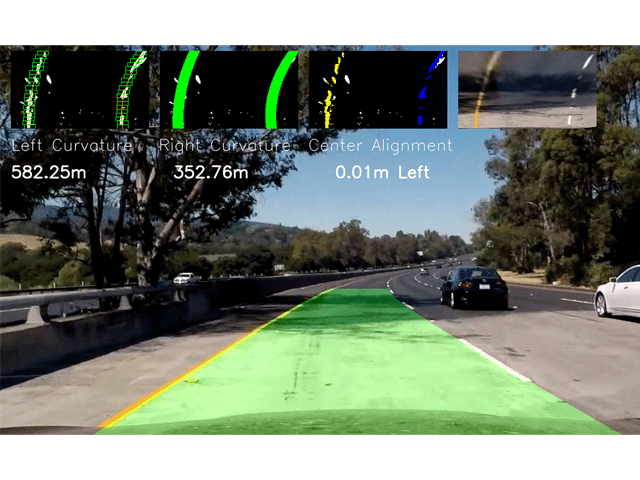

Bipin's Projects
Handwritten Prescription Digitalization using Layout Analysis and OCR
 View on Github
View on Github
PaddleOCR, TrOCR, YOLO, Gemma-7B
The project focuses on digitizing handwritten prescriptions through sophisticated layout analysis and OCR technologies. Employing a segmented model for precise line-by-line segmentation, it extracts crucial details including unique identification numbers, medication names, frequencies, quantities, and medical histories. An optimized OCR model is utilized for accurate information extraction from handwritten text, while a generative model transforms raw data into structured outputs, enhancing efficiency and precision in medication management and healthcare record-keeping..
ChatPDF with RAG System - Gemini Pro, LLama-3 (Specialized for Research Paper QnA)
 Live | View on GithubGemini-Pro, LLama-3, Semantic RAG
ChatPDF with RAG is a system designed to answer your questions about research papers in a chat-like interface. It uses Retrieval-Augmented Generation (RAG) to understand the paper and provide summaries or specific information. Uniquely, it can also translate the research paper’s concepts into code, potentially helping you implement the paper’s ideas.
End to End Behavioral Cloning of Self Driving Car (Udacity, Simulation)
 View on Github
View on Github
Imitation Learning | Tensorflow | PID Controller
The project entails constructing a comprehensive self-driving car system by implementing behavioral cloning with a meticulously designed convolutional neural network (CNN) architecture. The CNN is crafted with multiple convolutional layers followed by dense layers, utilizing the 'elu' activation function for nonlinear transformations. Training data, consisting of images captured from the car's viewpoint alongside corresponding steering angles, are preprocessed and utilized to train the CNN via behavioral cloning techniques. Additionally, a Proportional-Integral-Derivative (PID) controller is integrated to govern the car's speed output, ensuring stability and safety. Tuning parameters such as proportional gain (kp), integral gain (ki), and derivative gain (kd) are meticulously adjusted to fine-tune the controller's performance. Through seamless integration of these components, the system achieves real-time autonomous navigation, exemplifying the fusion of deep learning and control theory to propel self-driving car technology to new heights of precision and reliability.
KUKA Robot's Object Sorting on Conveyor
 View on GithubCoppeliaSim | Lua | Inverse Kinematics
This project aims to implement object sorting using a KUKA robot on a conveyor system. Leveraging inverse kinematics, the robot's movement is coordinated for efficient object handling. A color sensor integrated into the CoppeliaSim environment is employed to identify green-colored objects on the conveyor. Once detected, the robot's gripper is utilized to pick up the identified objects from the conveyor belt and transfer them onto another conveyor belt, facilitating seamless sorting operations.
Slab Bend Detection and Tracking (Collaboration : TataSteel)
 View on GithubYOLO | Tkinter | Threading
The project is a real-time video monitoring system designed for industrial applications, primarily focusing on detecting anomalies such as bends in metal slabs during production. Implemented using Python with libraries such as OpenCV, tkinter, and PyTorch, the system integrates live video feeds from multiple camera sources. Each frame is processed using a YOLO (You Only Look Once) model to detect anomalies. Detected anomalies are displayed alongside relevant information such as camera number, slab position, timestamp, and confidence level on a graphical user interface built with tkinter. Additionally, the system features functionalities including user authentication, database management for storing and filtering logged data, and a section for recording IP camera streaming details for integration into the monitoring system. The interface is designed for intuitive navigation with buttons for home, details list, settings, user management, and logout functionalities.
Text2Text Generation and Summarization using Pegasus Model
 View on Github
View on Github
Pegasus | Mistral | ROUGE
This project utilizes the advanced capabilities of the Pegasus Text to Text Generation model to automate the summarization of employee working contribution logs, aiming to distill key insights efficiently. By inputting verbose logs into the Pegasus model, concise and coherent summaries are generated that encapsulate the essential points of each entry. The obtained summaries serve to provide decision-makers with quick overviews of employees' contributions, progress, and challenges. Through rigorous evaluation using the ROUGE metric, the approach achieves commendable scores, with ROUGE-1 at 0.311323, ROUGE-2 at 0.082163, ROUGE-L at 0.218457, and ROUGE-Lsum at 0.218986. These scores attest to the effectiveness of the model in capturing the essence of the original logs. By integrating Pegasus into the workflow of handling employee logs, organizations stand to streamline summarization processes, facilitating more efficient decision-making, performance evaluation, and feedback provision while freeing up valuable time for managerial and HR tasks.
Bengali Sentiment Analysis using LSTM, BiLSTM, GRU Models
 View on GithubPyTorch | CNN | LSTM
This project centers on Bangla sentiment analysis, leveraging a neural network model fortified with data augmentation techniques. With Convolutional and Bidirectional LSTM layers at its core, the model attains an impressive test accuracy of 90.31%. By classifying Bangla text into Positive, Negative, and Neutral sentiments, the model adeptly captures the intricate nuances of sentiment expression. Data augmentation emerges as a pivotal strategy for dataset balance, bolstering the model's capacity to generalize across diverse sentiment patterns. This endeavor underscores the pivotal role of advanced neural network architectures and data augmentation methodologies in precisely discerning sentiment in Bangla text, offering invaluable insights for applications necessitating nuanced sentiment comprehension in the Bangla language.
Appearance Based Eye Gaze Estimation and MultiLangual Keyboard
 View on Github
View on Github
Scikit-Learn | Dlib | Random Forest | Extra Tree
The project presents a real-time eye gaze tracking interface designed for standard web or smartphone cameras, capable of operating in diverse environments while accommodating natural head movements. Utilizing an active appearance method, the system accurately extracts features from eye gaze images, specifically focusing on separating sclera pixel areas from masked eye images. Through performance evaluations employing decision tree, random forest, and extra tree classifiers, our approach achieved an approximate 98% accuracy across 13 targets, demonstrating its effectiveness. This versatile solution holds promise for various applications in human-computer interaction, robotics, and medical science, addressing the need for precise eye gaze tracking in unconstrained settings.
Teleoperated Quadcopter for Aerial Mapping (Gravity Destroyer)

Ardupilot | Arduino
Gravity Destroyer is a quadcopter drone developed by team Sparkers with unique features including exceptional stability, enabled by four brushless outrunner motors and 20A ESCs, allowing stable photography and videography. Equipped with Compass, humidity, Free Falling, and Autopilot sensors, it provides diverse data for weather forecasting. Controlled via radio transmitter or telemetry support, it utilizes Ardupilot 2.8 Pro as its brain for efficient wireless coding. Powered by a 27C Lithium Polymer battery, it offers a flight time of 20-25 minutes, capable of operating within a 2km radius and lifting up to 10 km Omnidirectional. It integrates seamlessly with landmine detector BoT, forming a manual or automatic team to detect and diffuse landmines while providing crucial area imagery.
Customer Queue Management System with Waiting Time Prediction

Scikit-Learn | Timeseries | Voting Regressor
This paper introduces a novel approach to the prediction of waiting times, leveraging ensemble tree-based methods for regression analysis to forecast precise waiting times. We evaluated the performance using several models: Random Forest Regressor, Extra Trees Regressor, Gradient Boosting Regressor, Histogram-Based Gradient Boosting Regressor, and Voting Regressor. Among these, the Extra Trees Regressor demonstrated superior performance, achieving a Mean Absolute Error (MAE) of 3.06 minutes, also the lowest Mean Squared Error (MSE) and Root Mean Squared Error (RMSE) along with an R² score of 0.957. To enhance model performance, various data preprocessing techniques were employed. Additionally, the challenge of data imbalance in classification tasks was addressed using the Synthetic Minority Oversampling Technique (SMOTE).
Lane Detection using Computer Vision
 View on GithubOpenCV | Hough Transformation
The project entails the implementation of a robust lane detection system using OpenCV in Python. By employing a series of image processing techniques, including grayscale conversion, Gaussian blur, Canny edge detection, and Hough Transformation, the system accurately identifies lane lines within road images or video streams. It intelligently selects regions of interest, detects straight lines, and averages the detected lines to provide a clear representation of lane markings. This system serves as a crucial component in autonomous driving systems, aiding in lane-keeping and navigation tasks, while also serving as a valuable tool for research in computer vision and image processing domains.
Development of RRT Path Planning Algorithm from Scratch (Simulation)
 View on Github
View on Github
Numpy | PyGame
The "Rapidly-exploring Random Tree (RRT) Path Planning Simulation" project provides a Python implementation of the RRT algorithm for path planning in a two-dimensional environment with obstacles. It consists of modules defining classes for managing the map, obstacles, and RRT graph, along with a driver program executing the RRT algorithm to find a path from start to goal positions while avoiding obstacles. The simulation, powered by Pygame, offers a visual representation of the RRT tree construction and displays the final path upon completion, serving as an educational tool for understanding motion planning principles.
Landmine Detection and Desposal Robot
 View on Github
View on Github
Arduino | C++
A Landmine Detecting Bot has been developed, featuring a 4-wheeler car design capable of autonomously navigating challenging terrains using sonar sensors to evade obstacles. Equipped with a moving metal detector covering a 180-degree range, it efficiently detects landmines and sends alerts to the base station upon detection, accompanied by a distinctive sound signal for confirmation. Controlled via smartphone for manual operation, the bot utilizes an Arduino UNO microcontroller for functionality and maintains a lightweight design to minimize potential damage from landmines. Continuous data transmission to the base station ensures data retrieval in the event of bot destruction, facilitating future research and development efforts.